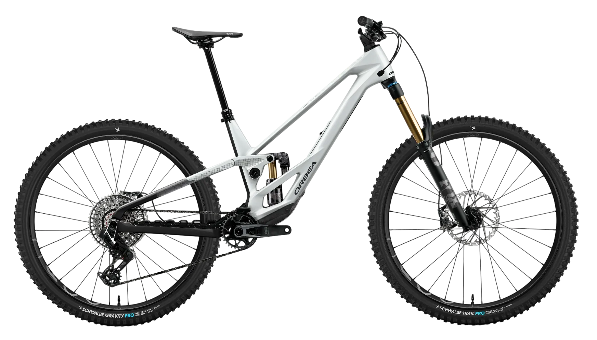

BikeCheck reportBikeCheck report veřejný odkazpublic link
Orbea Rallon M-Team
- 2023
- Enduro · 170/160 mmEnduro · 170/160 mm
- vel. Lsize L
- carbon OMR
Kompletní osazení a servisní historie stroje, tak jak je vedená v aplikaci BikeCheck. Stránka se aktualizuje sama — co majitel změní, uvidíš tady.The full build and service history of this machine as kept in the BikeCheck app. The page updates itself — whatever the owner changes, you see here.
- NájezdDistance
- 4 187km
- Čas v sedleRide time
- 312h
- KomponentComponents
- 32
- ServisůServices
- 11
Vlastník: Jarda L. · report vytvořen 12. 8. 2026Owner: Jarda L. · report created 12 Aug 2026

OsazeníThe build
32 kusů v 9 kategoriích. Klepni na řádek a uvidíš, kdy byl díl namontovaný.32 parts across 9 categories. Open a row to see when it was mounted.
Servisní historieService history
- ServisůServices
- 11
- VýměnSwaps
- 6
- ÚtrataSpent
- 18 340Kč
Zobrazeny poslední 4 měsíce. Starší servisy jsou v aplikaci — majitel je může kdykoli zveřejnit.Showing the last 4 months. Older services live in the app — the owner can publish them at any time.